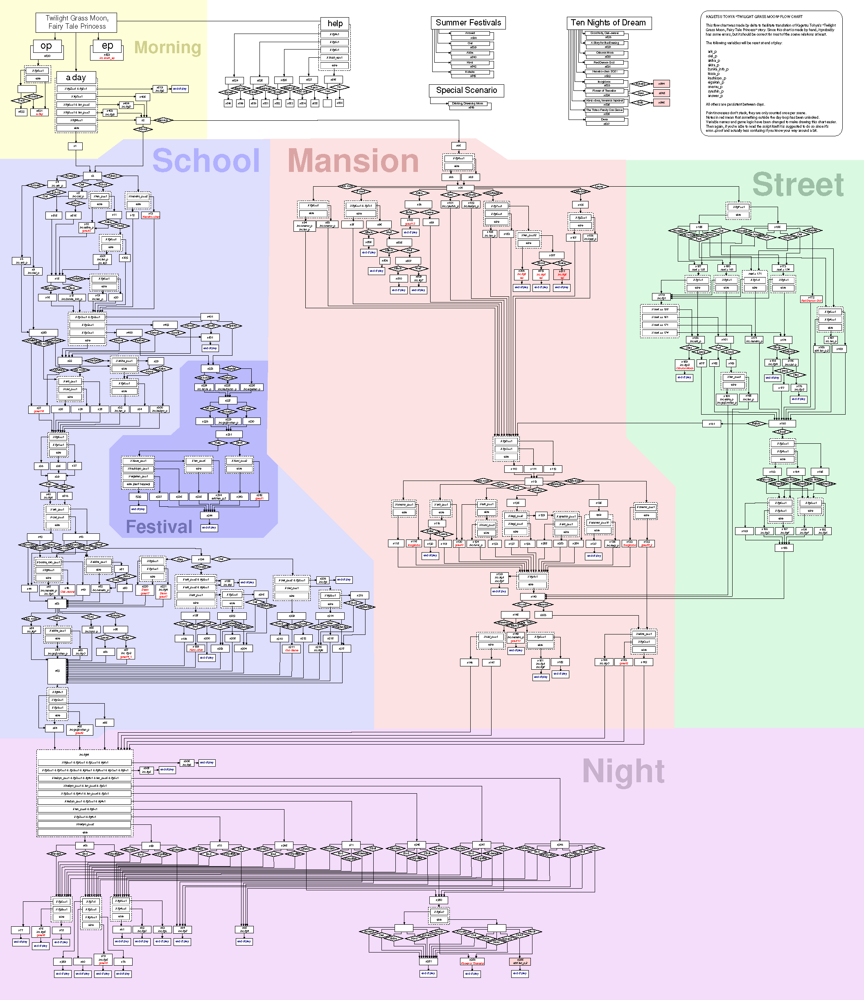

El Jorge написал(а):Эльфийская песнь
Этти-гарем же обычный (помню с поры когда ещё его по MTV крутили). Что там хорошего? И финал там вполне оформленный (большинство героев померло потому что).
salotor написал(а):Дубляж делала студия Реанимедиа
Этот полный дубляж добавляет продукции весьма много вистов, даже если она обычная "slice of life"-жвачка вроде ХараСудзу (не LuckyStar или K-On!, конечно, но всё же жвачка). Мне у них очень озвучивание "Волчицы и пряностей" понравилось.
El Jorge написал(а):Исчезнование Юки Нагато
Классический неканон от Бог весть кого. Сам смотреть не стал, но по отзывам друга-фаната ХараСудзу - редкая гадость.
Chess написал(а):"Босоногий Гэн"
Kagetsu Tohya проходите перед Кошкорутом. Становитесь котом, бегайте за котом, боритесь с котом-демоном, дружите с нэкоматами и... узнавайте откуда пошёл мем "A cat is fine too".
Помнится, многие жаловались, что в 7ДЛ много выборов и надо схемку. Знайте: Вы жизни не нюхали, если так считаете. Тамошняя схема настолько запутанная, что у меня нет сравнений. Ветвлений больше чем у нас во всём коммоне, с той поправкой что в Kagetsu Tohya нужно прожить только 1 день и никаких даже намёков на то, где персистент тебе нужный зарыт и в каком цикле ты его откопаешь. Сам я эту штуку неспешно тыкал около месяца без подсказок, чтоб найти как выйти из ленты Мёбиуса (там есть такой эпитет тамошней временной петли). Весьма на фантазмостроение в 7ДЛ-понимании принцип работы этой новеллы похож.
Схема Kagetsu Tohya

7dl-kun написал(а):аниму пишут. Посмотреть, что ли
Мой опыт от знакомства с аниме заставил меня решить, что визуальному ряду стоит предпочитать первоисточники (манга, ВН, ранобе). Ничего не вырезано, не переиначено, показывается внутренний мир героев... Плюс голова дорисовывает картину лучше, чем шаблонные ходы режиссёров-постановщиков.
А просмотра в виде сериалов достойны лишь работы по оригинальным сценариям (Евангелион, Мадока, Psycho-Pass).
Не хватает мне уникальности и нешаблонности в en masse японских поделий. Быстро приелось и наскучило (даже если в расчёт сёнэны не брать, большинство которых вообще на дух не переношу).
Отредактировано Dantiras (2018-03-20 13:04:10)